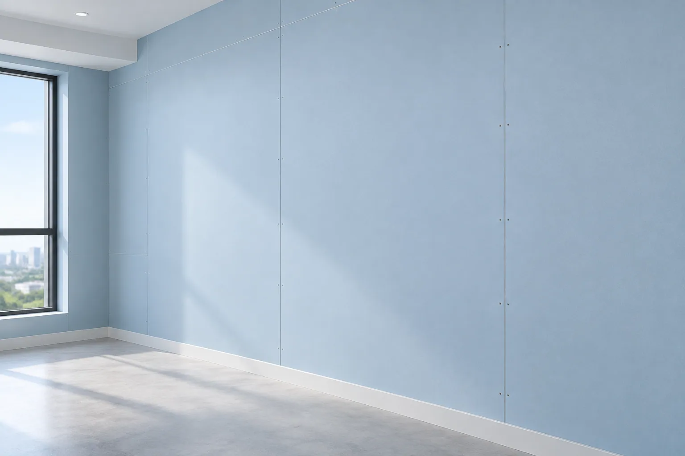
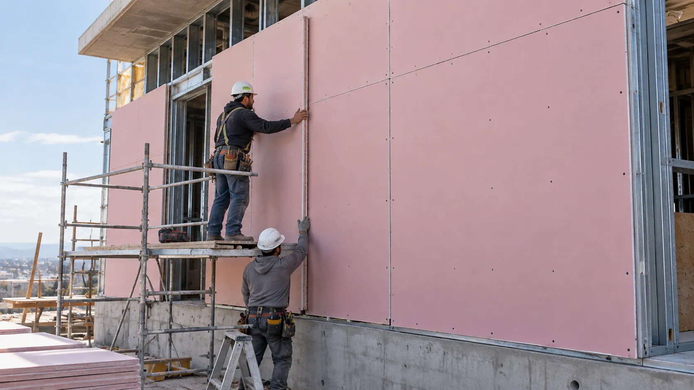
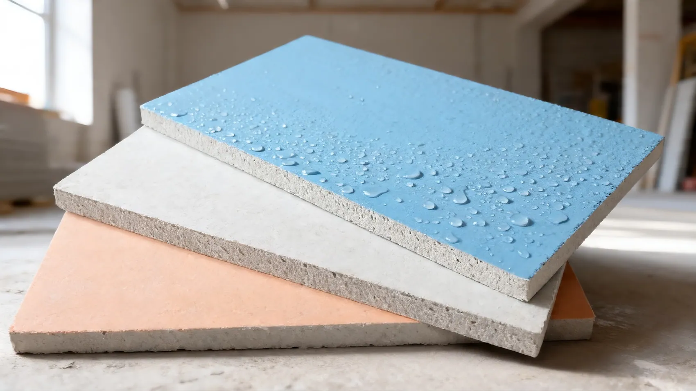
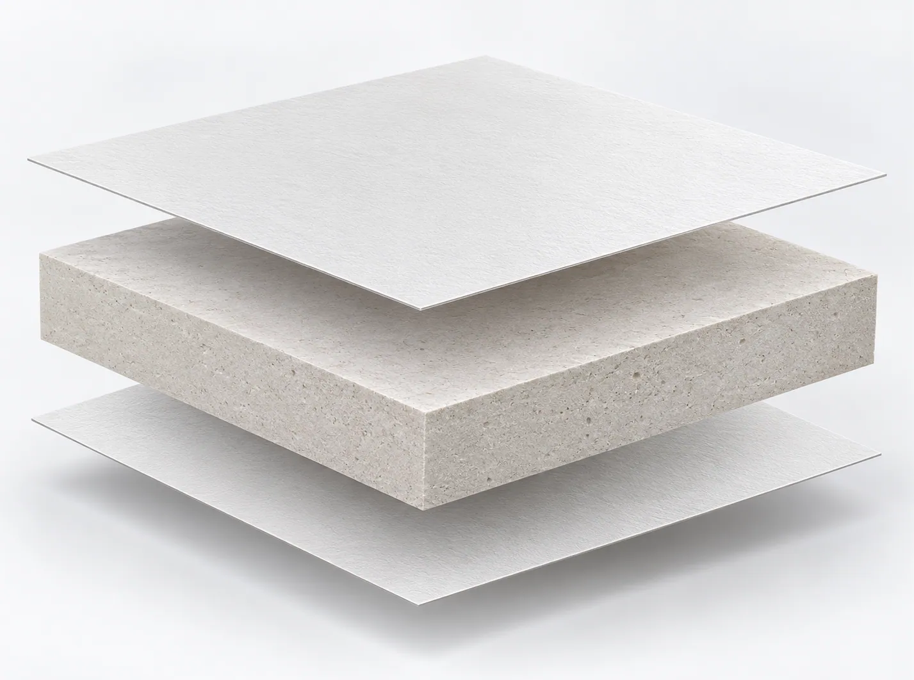
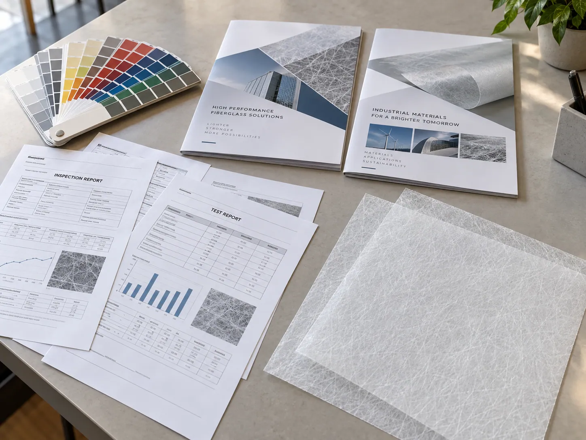

Interior Gypsum Boards
Surface consistency, reliable bonding, and dimensional stability for interior walls and ceilings.
01. Hero Section
Gypsum Board Facers Solution Hub
Improve gypsum slurry penetration, facer-to-core bonding, moisture resistance, and production consistency with application-matched fiberglass coated veil solutions.
GRECHO helps gypsum board manufacturers overcome facer-related challenges through tailored coating structures, controlled permeability, and reliable fiberglass substrates.
Key Advantages:

02. Application Context
Fiberglass coated veil plays an important role in gypsum board manufacturing, serving as a facing alternative to traditional paper in selected applications.
From slurry penetration and core adhesion to moisture protection and surface durability, the right facer helps manufacturers achieve more reliable board performance.

Surface consistency, reliable bonding, and dimensional stability for interior walls and ceilings.
Moisture resistance, weather exposure durability, and UV-resistant facer options for exterior wall applications.
Water-resistant facer solutions for gypsum boards used in moisture-prone environments.
Fiberglass-based facing solutions for gypsum board systems designed to meet specified fire performance requirements.

03. Pain Point Diagnostic
Even with a well-formulated gypsum core, unsuitable facer properties can lead to bonding defects, moisture-related problems, and inconsistent finished board quality.
Excessively dense coatings or low facer permeability may prevent gypsum slurry from penetrating the fiberglass structure, resulting in weak mechanical interlocking and unstable facer-to-core bonding.
Incompatible surface properties, uneven slurry distribution, or insufficient bonding during curing can cause blistering, localized separation, and reduced board integrity.
Inadequate water resistance may allow moisture to reach the gypsum core, increasing the risk of surface deterioration, softening, and reduced durability in damp environments.
Uneven coating, inconsistent tensile properties, or facer deformation during production can contribute to wrinkles, surface irregularities, and unstable finished board quality.
04. Facer Direction
GRECHO offers application-matched fiberglass coated veil solutions designed to balance slurry penetration, core bonding, moisture protection, and stable production performance.
Each material direction can be reviewed according to the gypsum formulation, manufacturing process, and finished board requirements.

Challenge: Insufficient Slurry Penetration & Weak Core Bonding
When facer coatings are too dense, gypsum slurry may struggle to penetrate the fiberglass structure, reducing mechanical interlocking and increasing the risk of bonding defects.
GRECHO Solution
A controlled-permeability fiberglass coated veil provides a balanced coating structure that supports slurry penetration while maintaining the required surface coverage.
By adjusting coating characteristics and fiberglass veil structure, manufacturers can improve facer-to-core interaction and support more consistent bonding during board formation.
Review Focus: Air permeability, slurry penetration, coating density, gypsum formulation, and bonding compatibility.
Challenge: Moisture Penetration & Surface Deterioration
Gypsum boards exposed to damp environments may experience moisture penetration through the facing, potentially affecting core stability and long-term board durability.
GRECHO Solution
A water-resistant fiberglass coating helps reduce liquid water penetration through the facer and provides additional surface protection for gypsum boards used in moisture-sensitive applications.
Selected coating formulations can be reviewed for exterior sheathing applications requiring additional weathering and UV resistance.
Review Focus: Water resistance, coating uniformity, moisture exposure, UV resistance, and application compatibility.
Challenge: Surface Wrinkling, Deformation & Production Inconsistency
Inconsistent facer dimensions or unsuitable mechanical properties can cause wrinkles, uneven surfaces, and processing difficulties during continuous gypsum board manufacturing.
GRECHO Solution
A dimensionally stable fiberglass veil with controlled coating uniformity and consistent tensile properties supports smoother processing and more reliable finished board quality.
Stable roll specifications also help reduce alignment problems and unnecessary material waste during production.
Review Focus: Tensile strength, dimensional stability, coating uniformity, roll width, and production line compatibility.
05. Material Direction Review
Different gypsum board applications require different facer structures and coating properties.
GRECHO helps manufacturers evaluate suitable fiberglass coated veil directions based on slurry compatibility, moisture exposure, surface requirements, and production conditions.
Required 05. Material Direction Review / Material Directions Commonly Reviewed.
The supplied image is not used in this slot.
For gypsum board production requiring balanced slurry penetration and reliable facer-to-core bonding.
For moisture-resistant gypsum boards requiring improved protection against liquid water penetration.
For selected exterior gypsum sheathing applications requiring additional resistance to sunlight exposure and weathering.
For gypsum board systems requiring additional mechanical strength, improved handling stability, or specialized reinforcement.
06. Performance Review Factors
GRECHO helps technical buyers, production engineers, R&D teams, and quality managers assess the facer properties that influence manufacturing efficiency and finished gypsum board performance.
Evaluate facer permeability and coating structure to ensure suitable slurry interaction and mechanical interlocking with the fiberglass substrate.
Review adhesion compatibility, slurry distribution, and bonding performance under actual board production conditions.
Assess liquid water penetration, coating integrity, and moisture exposure requirements for the intended gypsum board application.
Review applicable fire-related documentation and performance requirements for the selected facer and complete gypsum board system.
Evaluate tensile properties, coating uniformity, wrinkling resistance, and surface consistency during board forming and drying.
Confirm roll dimensions, winding quality, material consistency, and compatibility with continuous gypsum board production lines.
07. Documentation Support
GRECHO coordinates technical documentation and material samples to help gypsum board manufacturers evaluate suitable fiberglass coated veil solutions before production qualification.
Document access is matched to the selected product, application requirements, and buyer review stage.

Public Resource · PRODUCT BRIEF
An introduction to fiberglass coated veil solutions for gypsum board manufacturing, including common material directions and application considerations.
Application: Interior Gypsum Board / Exterior Gypsum Sheathing
Form Submission · BASIC TDS
Basic material specifications including nominal weight, thickness, roll width, coating characteristics, and available physical properties.
Access: Form Submission
Review Required · FIRE TEST
Available fire-related documentation for selected fiberglass facer configurations and applicable testing standards.
Review: Product and Configuration Dependent
Review Required · FULL TDS
Detailed technical specifications covering selected facer properties, including permeability, tensile strength, water resistance, and relevant test conditions.
Scope: Selected Fiberglass Coated Veil
Review Required · SDS / MSDS
Available material safety and handling information for the selected fiberglass coated veil product.
Type: Safety Documentation
Internal Review · COMPLIANCE
Review of available compliance documentation based on the selected facer, intended market, and gypsum board application.
Access: Internal Technical Review
Access Clarification
Document availability depends on the selected product, configuration, application, and internal review. Fire classifications and other performance results for individual facers do not automatically represent the performance of a complete gypsum board system.
Insufficient slurry penetration, weak bonding, moisture damage, or surface defects can affect both production efficiency and finished board quality.
GRECHO helps manufacturers review these challenges and identify suitable fiberglass coated veil directions based on actual production requirements.
Share your gypsum board type, slurry formulation, production conditions, and key technical concerns to begin a focused material evaluation.
09. FAQ Preview
The coating structure and permeability of fiberglass coated veil influence how gypsum slurry interacts with the facer during board formation.
Excessively dense coatings may limit slurry penetration, while a properly balanced structure can support mechanical interlocking and consistent bonding.
The optimal permeability should be evaluated according to the gypsum formulation and manufacturing process.
Yes. By optimizing the fiberglass structure, coating properties, and compatibility with the gypsum slurry, a suitable facer can support more reliable bonding.
However, final adhesion also depends on slurry formulation, board forming conditions, drying, and other production parameters.
Selected fiberglass coated veil formulations can help improve surface resistance to liquid water and UV exposure.
For exterior gypsum sheathing, the coating formulation can be reviewed according to expected sunlight exposure, weathering conditions, and installation requirements.
Complete board performance must still be verified through relevant testing.
Please share your gypsum board type, board dimensions, production process, gypsum slurry formulation, required facer properties, and intended application.
If you are experiencing specific problems such as poor slurry penetration, delamination, or water penetration, describing these issues will help GRECHO recommend a more suitable facer direction.
10. Final CTA
From slurry penetration and bonding reliability to moisture resistance and dimensional stability, GRECHO helps gypsum board manufacturers identify fiberglass coated veil solutions matched to their production needs.
Whether you are developing a new gypsum board product or improving an existing production process, our team can assist with material direction review, technical documentation, and sample coordination.